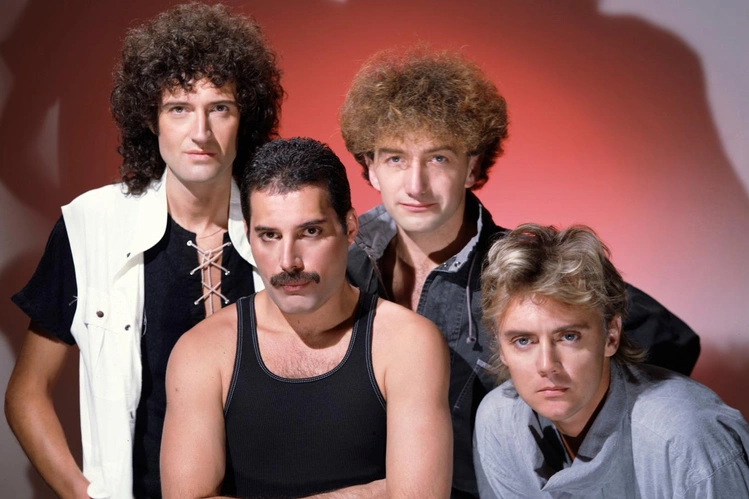

Merhaba, biz Queen.
Uzmanlık alanım: Rock, Opera Rock ve Stadyum Anthemleri
Stadyum Rock'ının Zirvesine Hoş Geldiniz

Queen, 1970 yılında Londra'da Freddie Mercury, Brian May, Roger Taylor ve John Deacon tarafından kurulan efsanevi İngiliz rock grubudur. Progressive rock, hard rock ve heavy metal etkilerini, daha radyo dostu ve pop-rock tarzıyla birleştirerek benzersiz bir sound yarattılar.
Grubun tiyatral sahne performansları, özellikle vokali Freddie Mercury'nin inanılmaz karizması ve seyirciyle kurduğu iletişim, onları dünyanın en iyi canlı performans gruplarından biri haline getirdi. 1985 yılındaki Live Aid performansları, rock tarihinin en büyük anlarından biri olarak kabul edilir.
Yazdıkları stadyum marşları ("We Will Rock You", "We Are the Champions"), bugün hala dünya çapında spor müsabakalarında ve etkinliklerde yankılanmaya devam ediyor.
Grubun başyapıtı. Dönemin en pahalı prodüksiyonlarından biri olan albüm, "Bohemian Rhapsody" gibi müzik tarihini değiştiren bir şarkıya ev sahipliği yapıyor.
Daha sade ve doğrudan bir rock sound'una dönüş. Seyircinin eşlik etmesi için yazılan stadyum marşlarıyla grubun en popüler işlerinden biri.
Synthesizer kullandıkları ilk albümleri. Hem rock hem de disco ve funk unsurlarını barındıran bu albüm, gruba ABD'de ilk 1 numarasını getirdi.
Elektronik pop ile hard rock arasında mükemmel bir denge. Grubun Live Aid öncesi enerjisini yeniden topladığı ve dünya çapında hitler çıkardığı dönüm noktası.
Işık şovları, seyirci etkileşimi ve devasa ses sistemleriyle stadyum rock konserlerini adeta birer tiyatro gösterisine dönüştürdüler. Live Aid 1985'teki 21 dakikalık şovları, tarihin en iyi canlı performansı seçilmiştir.
Sadece tek bir türe bağlı kalmayıp opera, gospel, funk ve rockabilly gibi many tarzı rock müzikle harmanladılar. "Bohemian Rhapsody", yapısı itibarıyla müziğin kurallarını yıkan bir manifestodur.
Göz alıcı kostümleri, kendine has bıyığı ve sınırsız vokal aralığı ile Freddie Mercury, gelmiş geçmiş en yetenekli ve ilham verici frontman'lerden biri olarak kabul edilmektedir.